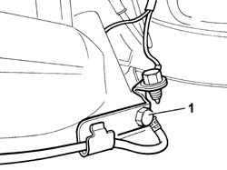
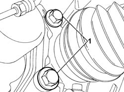
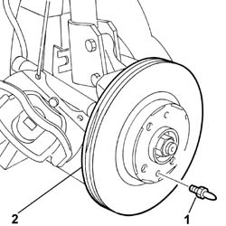

3310A48 FRONT BRAKE DISC (ONE), LEFT OR RIGHT - R.R
- Path
- Procedures > 33 BRAKES > 3310 DISC BRAKES > 3310A FRONT DISC BRAKES > 3310A48 FRONT BRAKE DISC (ONE), LEFT OR RIGHT - R.R
- Kind
- repair procedure (removal / refitting; the operation number is the code)
- Applies to
- all engines; all production periods
- Interactive page
- https://sloeber94.github.io/elrnDB-fUlss/en/#/179007281
Applies to: all engines; all production periods
 Removing
Removing
 Refitting
RefittingSee
Op. 5530B56 BATTERY DRIP TRAY COVER - R.R.
Disconnect the negative battery terminal.
Position the vehicle on a lift.
See
Op. 4450B12 FRONT WHEELS (TWO) - R+R
Release the brake pipe rubber retainer from its seat.
Disconnect the electrical connection for the brake pad wear sensor.
1. Unscrew the bracket on the brake caliper for the pad wear sensor electrical connection.

Applies to: all engines; all production periods
1. Undo the bolts securing the bracket to the caliper.

Applies to: all engines; all production periods
Move the brake caliper assembly aside.
1. Unscrew the disc retaining bolts.
2. Remove the brake disc.

Applies to: all engines; all production periods
Refitting
RemovingFit the brake disc in its seat on the hub and tighten the retaining bolts to torque.
Component | Fastening | dia | Component | Value daNm |
|---|---|---|---|---|
Bolt | BRAKE DISC IN HUB | 1.5 |
Position the brake caliper assembly.
Tighten the bolts securing the brake caliper bracket.
Component | Fastening | dia | Component | Value daNm |
|---|---|---|---|---|
Bolt | BRACKET ON HUB | 16 |
Connect the electrical connection for the brake pad wear sensor.
See
Op. 4450B12 FRONT WHEELS (TWO) - R+R
Remove the vehicle from the lift.
Connect the negative battery terminal.
See
Op. 5530B56 BATTERY DRIP TRAY COVER - R.R.
Test the operation of the braking system.